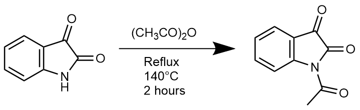
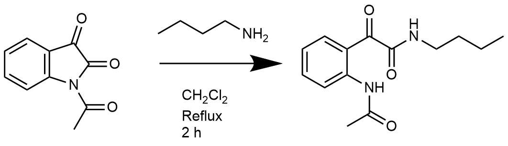

This article describes a four week project based on developing peptidomimetics.
Synthesis of N-Acetylisatin
A solution of Isatin (3.12 g, 20.4 mmol) and Acetic anhydride (15 mL, 0.159 mol) was prepared and refluxed for two hours and 15 minutes at 140 \(^{\circ}\)C. The reaction mixture was then filtered and washed with hexane to yield the yellow crystalline product, N-acetylisatin (2.98 g, 74%).

An alternative synthetic procedure for the synthesis of N-acetylisatin from isatin where acetic anhydride is not used is provided by Chen, Qifa et al(Chen, Teng, and Xu 2021). A solution of isatin (2.94 g), alkyl bromide (2.40 g), K2CO3 (4.14g, 30 mmol) in MeCN (40 mL) is to be prepared. This mixture is then stirred at reflux for eight hours and when the reaction is complete the solvent is evaporated away under vacuum. The crude product can then be purified using column chromatography on silica gel with an ethyl acetate and petroleum ether eluent system.
Esterification of glycine
A solution of glycine (1.124 g), TMSCl (10 mL) and MeOH (three equivalents) was prepared and kept in an air tight environment before being left to stir for three hours. After the reaction was complete (monitored via TLC), the reaction mixture was concentrated on a rotary evaporator to yield a white crystalline solid, glycine methyl ester (1.5 g)
Ring opening reaction with butylamine
Methods
N-acetylisatin (0.5 g) and dichloromethane (2 mL) were combined in a round bottom flask before the drop-wise addition of butylamine (0.26 mL, 2.64 mmol) whilst the reaction mixture was stirred. This reaction mixture was then refluxed for two hours and the reaction progress was monitored by TLC. Following this, the reaction mixture was allowed to cool to room temperature prior to being transferred to a separatory funnel for a liquid-liquid extraction with hydrochloric acid (15 mL, 2M). The organic dichloromethane layer was retained whilst the aqueous layer was discarded. This organic layer was washed with brine before another liquid-liquid extraction was performed. Once again, the organic layer was retained and magnesium sulfate was added to this aliquot and the mixture was then filtered. The solvent was then removed using a rotary evaporator. The product of this reaction was a fine yellow solid (0.4 g).

Ring opening reaction with glycine methyl ester
A solution of glycine methyl ester hydrochloride (0.286 g, 3.17 mmol), acetonitrile (7.5 mL) was prepared and stirred before triethylamine (0.5 mL, 3.59 mmol) was added dropwise to the solution. To this solution, N-acetylisatin (0.5 g, 264 mmol) was then added and the reaction was left to run under vacuum whilst stirring. The reaction progress was monitored via thin layer chromatography and once complete the reaction mixed was evaporated to dryness using a rotary evaporator.